SQLserver-定期自动备份和自动删除
打开数据库管理工具，选择管理–>维护计划
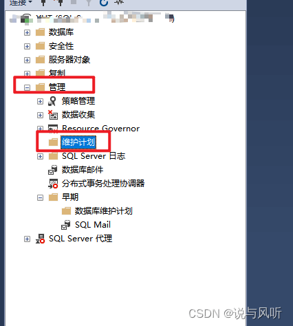右键–>维护计划向导
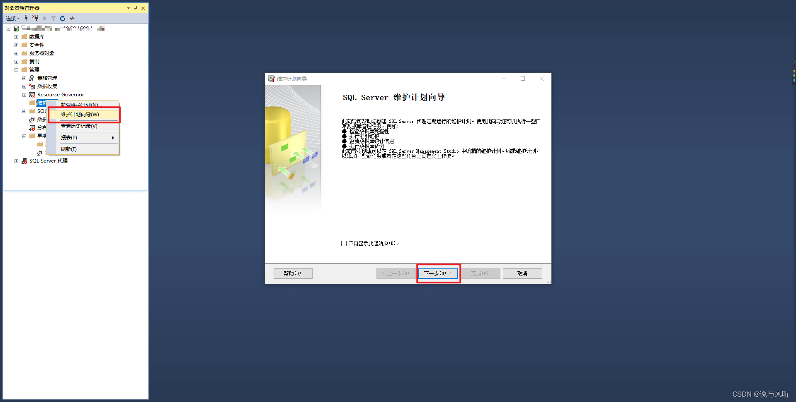点击下一步，计划名称可以自定义，在计划选项上，点击更改，频率更改为每天（可以自己的实际情况设置时间，每周、每月、或者周几），每天频率：设置自动备份的时间
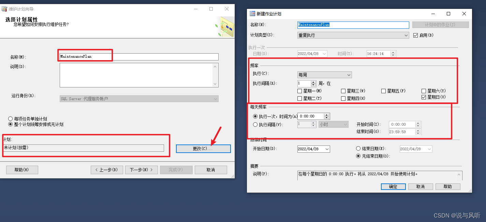设置完成后点击下一步，我这是的是每天三点。
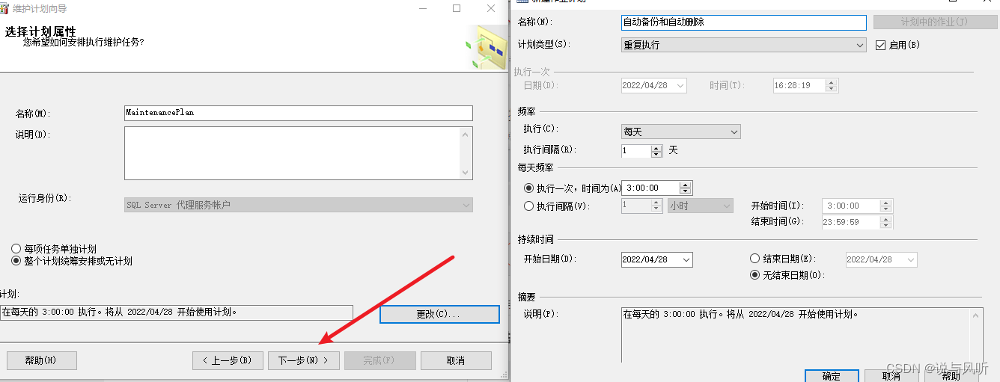设置计划内容，选择“备份数据库(完整)”任务和“清除维护”任务，然后下一步
设置执行顺序，默认即可。
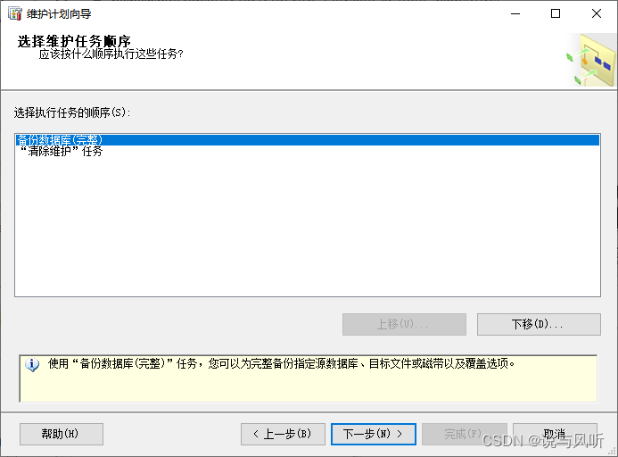下一步，选择需要备份的数据库，备份文件存放位置。
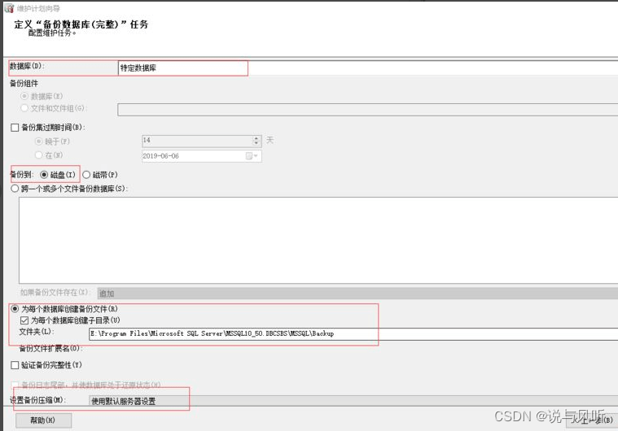定义“清楚维护”任务，选择备份文件的文件夹和删除超过多长时间的文件
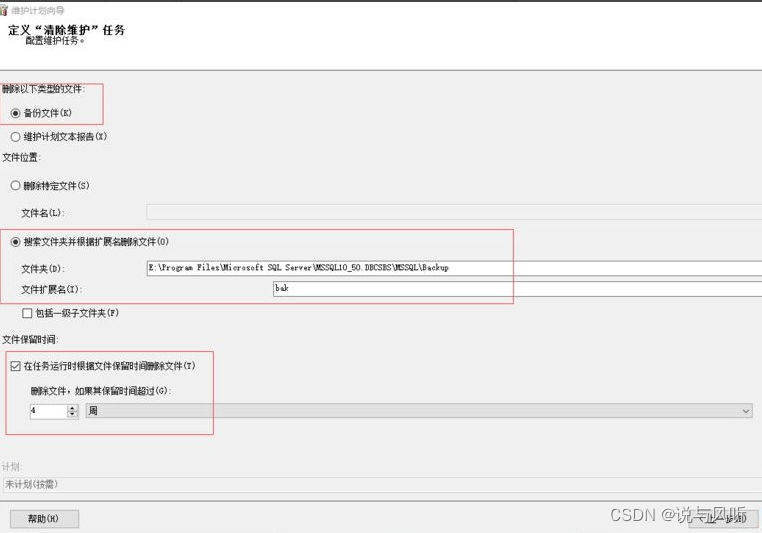选择报告选项，选择报告存放位置，点击下一步。
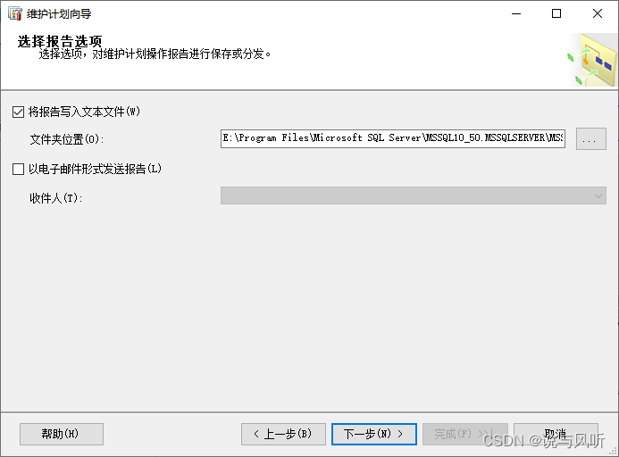即可完成对数据库的自动备份和自动删除操作
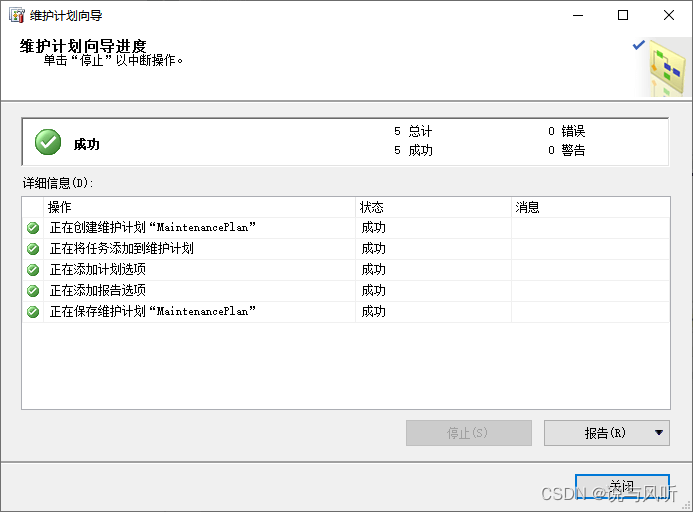在维护计划中就能看到自动备份的计划。
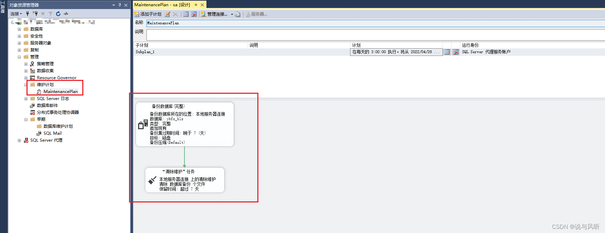
问题
作业失败
服务器访问权限
该作业失败。 无法确定所有者 DESKTOP-T12SOL0\LeonLin (拥有作业 数据库备份.Subplan_1)是否有服务器访问权限 (原因: 无法获取有关 Windows NT 组/用户 ‘DESKTOP-T12SOL0\LeonLin’ 的信息，错误代码 0x534。 [SQLSTATE 42000] (错误 15404)).
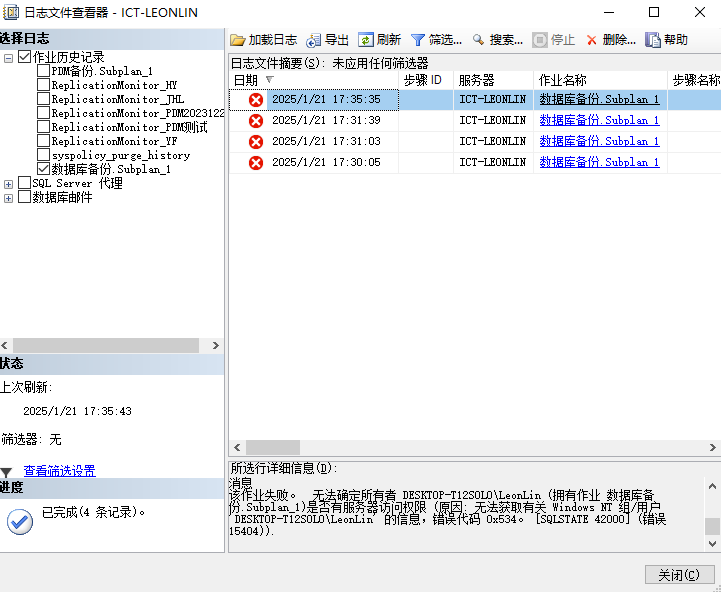